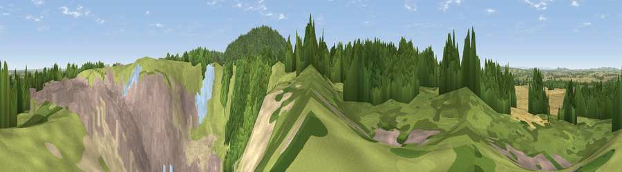

Viewpoint near Leaton
#20118 in England · top 61% of its area beats it · near LeatonWhere it is
The exact computed spot (SJ 61425 11125). Click the marker for map links.
The view, rendered

A 360° render of this exact spot computed from the terrain model, tree cover and land cover — summer colours, afternoon light, calibrated against photographs of famous viewpoints. Real trees, hedges and buildings will differ in detail.
The panorama
Grey silhouette: terrain skyline in each direction (720 bearings, Earth curvature and refraction included). Dashed green: skyline with trees (+15 m) and buildings (+8 m) as obstacles. Blue strip: how far the ground is visible on each bearing.
Where the view opens
Wedge length = distance to the farthest visible ground on that bearing (vegetation-aware). Rings at 10, 25 and 50 km.
What fills the view
32% woodland · 24% built-up · 19% grassland · 13% cropland · 9% bare ground · 2% water
Angular shares of the visible panorama (visual magnitude), not map area. Landscape diversity 0.69 (0–1 Shannon).
Key numbers
More beautiful places nearby
The staircase of upgrades: each row has a higher view potential than everything closer. Driving times are estimates from straight-line distance, calibrated against real road routing — check an actual route before setting out.
| Place | Direction | Drive | Score |
|---|---|---|---|
| Viewpoint near Leaton | E · 1 km | ~2 min | 68.5 |
| Viewpoint near Little Wenlock | SE · 3 km | ~8 min | 84.2 |
| The Wrekin | SSE · 3 km | ~8 min | 85.0 |
| Viewpoint near Little Wenlock | SSE · 3 km | ~8 min | 86.6 |
| North Hill | SSE · 67 km | ~90 min | 86.8 |
| Worcestershire Beacon | SSE · 68 km | ~91 min | 87.1 |
| Viewpoint near Cartmel | N · 170 km | ~192 min | 87.2 |
| Viewpoint near West Quantoxhead | SSW · 176 km | ~196 min | 87.9 |
52.69642, -2.57223 · source: screening · position refined by local search. Computed location — check access rights before visiting.